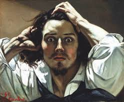
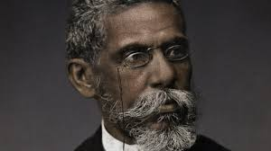
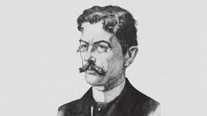

O que é o Realismo?
O Realismo surge na Europa em meados do século XIX, mais especificamente na França, o movimento surge como uma contraposição ao Romantismo, e como o próprio nome sugere, propõe visão realista, e é contrário à fuga da realidade romântica. O movimento influenciou principalmente a literatura, sendo a primeira obra Madame Bovary, de Gustave Flaubert, em 1857.
Contexto histórico europeu
O contexto histórico do Realismo se dá em uma época considerada conturbada com vários acontecimentos marcantes. O modelo capitalista impulsionado pela Primeira Revolução Industrial prolongou-se de forma amarga para os trabalhadores e a todos que não fossem parte da burguesia. Ele trouxe algumas inovações tecnológicas que melhoraram a qualidade de vida da população urbana, mas quem disse que um mero trabalhador poderia comprar tais. Isso junto da exploração e jornadas de trabalho que se assemelhavam à escravidão despertou um sentimento de revolta na população humilde.
É nesse cenário que ocorre a Segunda Revolução Industrial, que trás mais avanços como o carro a gasolina e a invenção da lâmpada elétrica, porém que acompanham gigantesca poluição e acentuada urbanização. Surgem ainda avanços científicos como a teoria do evolucionismo, proposta por Charles Darwin. Tudo isso influenciou escritores e artistas que vivam o momento, de forma que a situação se transmitisse por meio da arte, com linguagem clara e uma crítica à burguesia, contrariando padrões do Romantismo, como por exemplo o individualismo.

O Realismo na literatura
O Realismo começa na literatura com o lançamento de Madame Bovary, por Gustave Flaubert, em 1857. Não haveria melhor narrativa para estrear o Realismo do que uma história de um casamento infeliz que aborda assuntos não muito falados como o suicídio e o adultério. Junto do clássico francês, surgem outros autores importantes para o período, como Eça de Queiroz em Portugal, publicando obras como O Primo Basílio, e Fiodor Dostoievski publicando Crime e Castigo.
Contexto histórico brasileiro
O movimento acontece no brasil durante a vigência de Dom Pedro II, logo após a proclamação da república, e possui as mesmas características que adquiriu na Europa, criticando a burguesia e as desigualdades provenientes da mesma. É nesse cenário, influenciado pelo Positivismo, pelo Socialismo e pelo Marxismo, que se desenvolvem ao longo dos anos 1800, que o Realismo surge no Brasil.
Tudo isso durante avanços tecnológicos, a abolição da escravidão e outros eventos sociais. Assim como Madame Bovary foi pioneiro na França, Memórias Póstumas de Brás Cubas foi pioneiro em solo brasileiro, sendo considerada a primeira obra realista do país, escrita por Machado de Assis.
Características do Realismo
A característica é a objetividade, apresentando o que realmente acontece de forma direta e sem rodeios e sem idealizações. As obras criticavam situações da época, instituições sociais como a igreja e principalmente, criticavam a burguesia. Os personagens das obras são pessoas comuns, porém são construídos muito profundamente, desde seu subconsciente até suas ações, e vivem situações cotidianas, como casamentos arranjados, e outras situações de temas urbanos e sociais.
Os textos são influenciados por um viés científico, como o muito utilizado Determinismo, que propõe que o indivíduo é fruto do meio em que vive, podemos observar isso na principal obra realista brasileira, Memórias Póstumas de Brás Cubas. No geral, podemos definir as características do Realismo como:
• Objetividade
• Linguagem direta
• Críticas sociais
• Temas cotidianos
• Personagens comuns e aprofundados
• Determinismo social: o ser é fruto do ambiente em que vive
• Oposição ao Romantismo
Autores e obras
Machado de Assis
Joaquim Maria Machado de Assis, nasceu no morro do Livramento, no estado do Rio de Janeiro, em família humilde. Perdeu a mãe muito cedo e se interessou pela literatura, se tornando autodidata e começando a escrever sonetos, posteriormente se tornando um dos maiores escritores brasileiros, principalmente com sua prestigiada obra Memórias Póstumas de Brás Cubas.

Memórias Póstumas de Brás Cubas
A obra trouxe o Realismo ao Brasil, sendo dividida em 160 capítulos. Brás Cubas é um defunto-autor, que conta sua história, começando pela sua morte, viajando entre datas e vivências que viveu durante a narrativa. O livro analisa profundamente o psicológico das personagens e principalmente do protagonista, mostrando seus pensamentos, preconceitos e ações e consequências, mostrando conquistas, desgraças e perdições que fazem sua vida uma história boa de se ler. Segue um trecho da obra:
Raul Pompeia
Raul d'Ávila Pompeia nasceu em Angra dos Reis, no estado do Rio de Janeiro, em boa família. Escritor desde cedo, Raul sempre escreveu com suas críticas e por conta disso foi afastado algumas vezes de seus cargos, alcançando posições como cronista, romancista, orador, jornalista e contitsta ao longo de sua vida, a qual daria um fim trágico aos 32 anos cometendo suicídio com um tiro no coração. O autor ganhou destaque no Realismo ao escrever e publicar O ateneu.

O ateneu
O romance é dividido em 12 capítulos e assim como as obras realistas, apresenta profunda descrição e reflexão do ambiente em que a história se passa e das personagens que a vivem. O personagem principal é o narrador principal e conta sua experiência, depois de adulto, que teve quando mais jovem no colégio Anteneu.Segue um trecho da obra: